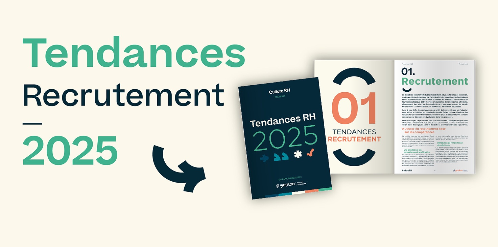

Le marché du recrutement en RDC connaît une transformation digitale accélérée. Les entreprises congolaises adoptent progressivement les nouvelles technologies pour attirer et sélectionner les meilleurs talents. Découvrez les tendances qui redéfinissent le recrutement en 2026.
Le recrutement digital en chiffres
65% des entreprises congolaises utilisent désormais des plateformes digitales pour recruter, contre 35% en 2023. Le mobile représente 70% des candidatures en ligne.
1. L'essor des plateformes de recrutement en ligne
Démocratisation de l'accès aux talents
Les plateformes comme COSMOS Group révolutionnent le recrutement en RDC :
- Portée nationale : Accès à des candidats de toutes les provinces
- Base de données élargie : Plus de 70 000 CV disponibles
- Filtrage intelligent : Recherche par compétences, expérience, localisation
- Gain de temps : Réduction de 60% du temps de recrutement
- Coût optimisé : Moins cher que les méthodes traditionnelles
Tendance : Mobile-First
Avec la pénétration croissante des smartphones en RDC, les candidats postulent majoritairement via mobile. Les entreprises doivent adapter leurs processus de recrutement pour cette réalité.
Impact : Formulaires simplifiés, CV en format mobile, notifications push pour les nouvelles offres.
2. Les entretiens vidéo deviennent la norme
Avantages pour les entreprises
- Économies : Pas de frais de déplacement pour les premiers entretiens
- Rapidité : Organisation plus flexible et rapide
- Portée géographique : Recrutement dans toute la RDC sans contraintes
- Enregistrement : Possibilité de revoir les entretiens
- Collaboration : Plusieurs recruteurs peuvent participer à distance
Outils populaires en RDC
- Zoom (le plus utilisé)
- Google Meet (gratuit et accessible)
- Microsoft Teams (entreprises structurées)
- WhatsApp Video (premiers contacts informels)
3. L'intelligence artificielle au service du recrutement
ATS (Applicant Tracking Systems)
Les systèmes de gestion des candidatures automatisent le processus :
- Tri automatique : Analyse des CV selon des critères définis
- Scoring des candidats : Classement par pertinence
- Emails automatisés : Confirmation de réception, refus, convocations
- Suivi centralisé : Toutes les candidatures en un seul endroit
Tendance : Chatbots RH
Les chatbots répondent aux questions des candidats 24/7, pré-qualifient les profils et planifient les entretiens automatiquement. Adoption croissante dans les grandes entreprises congolaises.
4. Le recrutement sur les réseaux sociaux
LinkedIn : incontournable pour les cadres
- Recherche proactive de talents (chasse de têtes)
- Publication d'offres ciblées
- Vérification des profils et recommandations
- Networking professionnel
Facebook : portée massive en RDC
- Groupes emploi très actifs (Emploi RDC, Jobs Kinshasa)
- Publicités ciblées par localisation et intérêts
- Partage viral des offres
- Coût d'acquisition candidat très bas
WhatsApp : communication directe
- Diffusion d'offres via statuts et groupes
- Communication rapide avec les candidats
- Envoi de documents et convocations
- Entretiens préliminaires en audio/vidéo
5. L'importance de la marque employeur
Pourquoi c'est crucial en 2026
Les candidats recherchent désormais des informations sur l'entreprise avant de postuler :
- Culture d'entreprise et valeurs
- Témoignages d'employés
- Opportunités de développement
- Équilibre vie pro/perso
- Impact social et environnemental
Stratégies de marque employeur
- Présence digitale : Site carrière attractif, réseaux sociaux actifs
- Contenu authentique : Vidéos d'équipe, témoignages employés
- Transparence : Processus de recrutement clair, salaires indicatifs
- Engagement : Réponse rapide aux candidatures, feedback constructif
6. Le recrutement basé sur les compétences
Au-delà du diplôme
Les entreprises congolaises valorisent de plus en plus les compétences réelles :
- Tests pratiques : Études de cas, exercices métier
- Portfolios : Projets réalisés, réalisations concrètes
- Certifications : Formations en ligne, bootcamps
- Soft skills : Communication, adaptabilité, travail d'équipe
Avantages de cette approche
- Élargissement du vivier de talents
- Réduction des biais de recrutement
- Meilleure prédiction de la performance
- Diversité accrue des profils
7. Les secteurs qui recrutent le plus en RDC
Top 5 des secteurs en croissance
- Technologies & Digital : Développeurs, data analysts, cybersécurité
- Banque & Finance : Fintech, microfinance, comptabilité
- Télécommunications : Réseau, support technique, commercial
- Mines & Énergie : Ingénieurs, techniciens, HSE
- Commerce & Distribution : Vente, logistique, supply chain
Compétences les plus recherchées
- Développement web et mobile
- Marketing digital et e-commerce
- Gestion de projet (Agile, Scrum)
- Analyse de données
- Langues (français, anglais, lingala)
- Vente et négociation
8. Conseils pour moderniser votre recrutement
Pour les recruteurs
- Digitalisez vos processus : Adoptez un ATS adapté à votre taille
- Formez vos équipes RH : Aux nouveaux outils et méthodes
- Optimisez votre présence en ligne : Site carrière, réseaux sociaux
- Mesurez vos performances : KPIs de recrutement (temps, coût, qualité)
- Restez à l'écoute : Feedback candidats, veille sectorielle
Pour les candidats
- Créez un profil LinkedIn professionnel
- Optimisez votre CV pour les ATS (mots-clés, format simple)
- Développez vos compétences digitales
- Construisez votre présence en ligne (portfolio, projets)
- Restez actif sur les plateformes de recrutement
Le saviez-vous ?
Les entreprises qui adoptent le recrutement digital réduisent leur coût par embauche de 50% et leur délai de recrutement de 40% en moyenne.
Modernisez votre recrutement avec COSMOS Group
Accédez à notre plateforme de recrutement digital et à notre base de données de plus de 70 000 candidats qualifiés en RDC.
Découvrir nos solutions RH